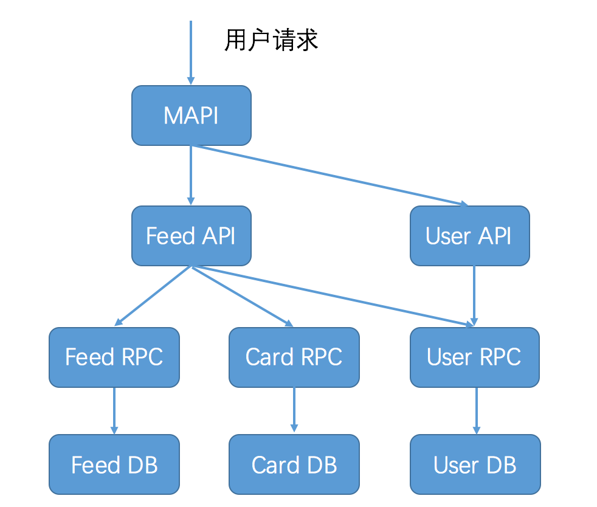
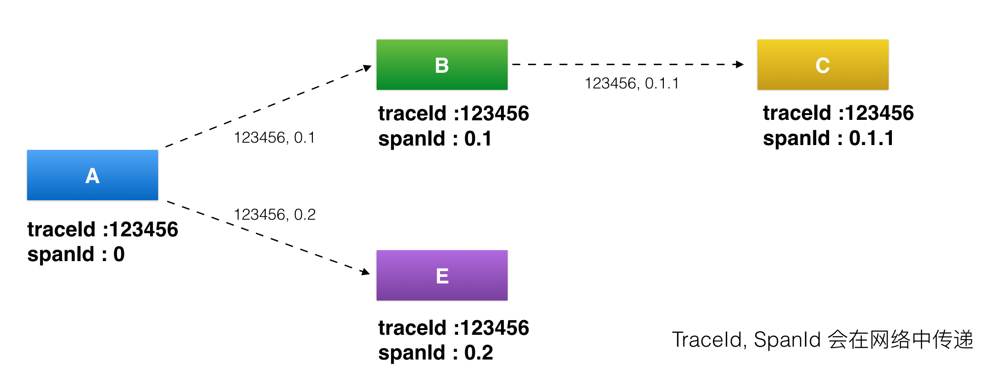
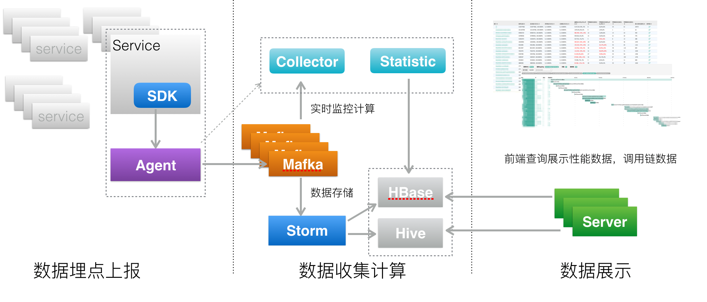
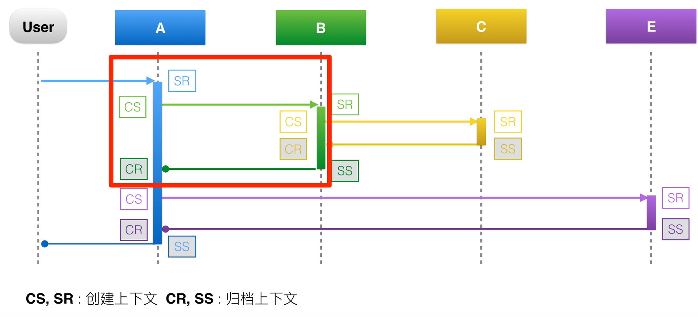
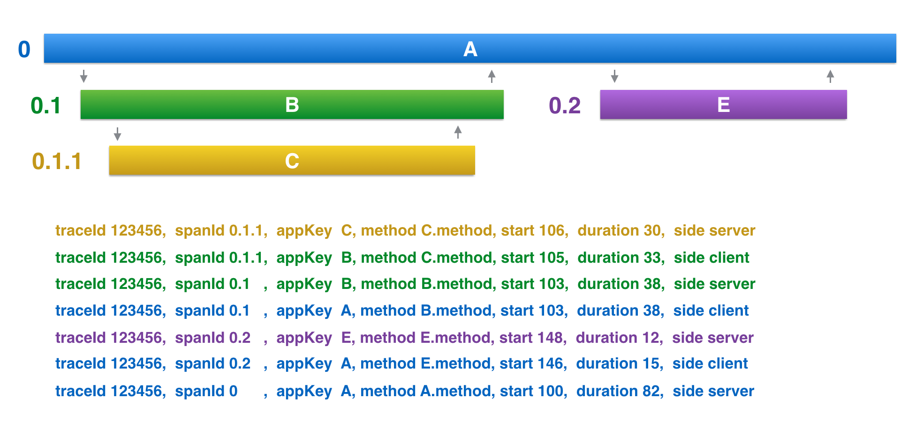
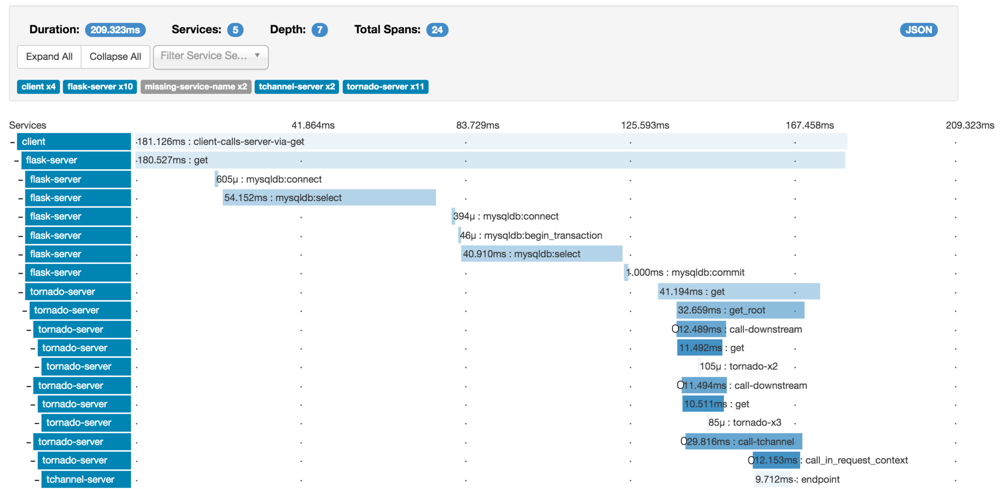
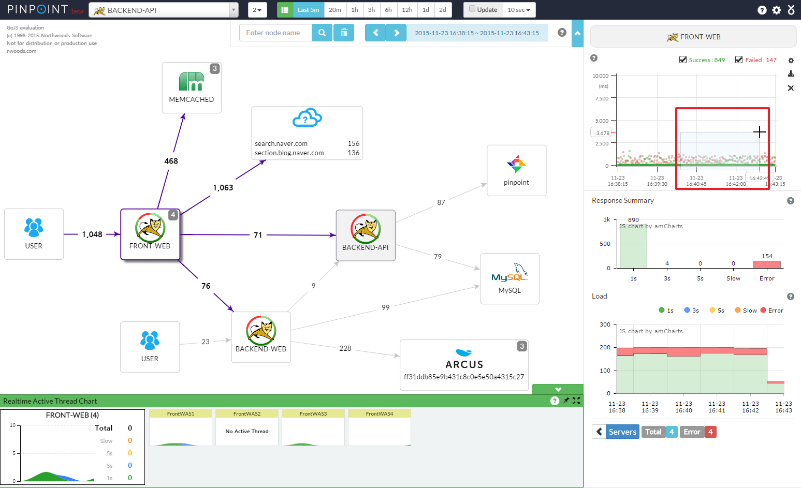

- 00 开篇词 微服务，从放弃到入门.md.html
- 01 到底什么是微服务？.md.html
- 02 从单体应用走向服务化.md.html
- 03 初探微服务架构.md.html
- 04 如何发布和引用服务？.md.html
- 05 如何注册和发现服务？.md.html
- 06 如何实现RPC远程服务调用？.md.html
- 07 如何监控微服务调用？.md.html
- 08 如何追踪微服务调用？.md.html
- 09 微服务治理的手段有哪些？.md.html
- 10 Dubbo框架里的微服务组件.md.html
- 11 服务发布和引用的实践.md.html
- 12 如何将注册中心落地？.md.html
- 13 开源服务注册中心如何选型？.md.html
- 14 开源RPC框架如何选型？.md.html
- 15 如何搭建一个可靠的监控系统？.md.html
- 16 如何搭建一套适合你的服务追踪系统？.md.html
- 17 如何识别服务节点是否存活？.md.html
- 18 如何使用负载均衡算法？.md.html
- 19 如何使用服务路由？.md.html
- 20 服务端出现故障时该如何应对？.md.html
- 21 服务调用失败时有哪些处理手段？.md.html
- 22 如何管理服务配置？.md.html
- 23 如何搭建微服务治理平台？.md.html
- 24 微服务架构该如何落地？.md.html
- 25 微服务为什么要容器化？.md.html
- 26 微服务容器化运维：镜像仓库和资源调度.md.html
- 27 微服务容器化运维：容器调度和服务编排.md.html
- 28 微服务容器化运维：微博容器运维平台DCP.md.html
- 29 微服务如何实现DevOps？.md.html
- 30 如何做好微服务容量规划？.md.html
- 31 微服务多机房部署实践.md.html
- 32 微服务混合云部署实践.md.html
- 33 下一代微服务架构Service Mesh.md.html
- 34 Istio：Service Mesh的代表产品.md.html
- 35 微博Service Mesh实践之路（上）.md.html
- 36 微博Service Mesh实践之路（下）.md.html
- 微博技术解密（上） 微博信息流是如何实现的？.md.html
- 微博技术解密（下）微博存储的那些事儿.md.html
- 结束语 微服务，从入门到精通.md.html
- 阿忠伯的特别放送 答疑解惑01.md.html
- 阿忠伯的特别放送 答疑解惑02.md.html
- 捐赠
08 如何追踪微服务调用？
在微服务架构下，由于进行了服务拆分，一次请求往往需要涉及多个服务，每个服务可能是由不同的团队开发，使用了不同的编程语言，还有可能部署在不同的机器上，分布在不同的数据中心。
下面这张图描述了用户访问微博首页，一次请求所涉及的服务（这张图仅作为示意，实际上可能远远比这张图还要复杂），你可以想象如果这次请求失败了，要想查清楚到底是哪个应用导致，会是多么复杂的一件事情。

如果有一个系统，可以跟踪记录一次用户请求都发起了哪些调用，经过哪些服务处理，并且记录每一次调用所涉及的服务的详细信息，这时候如果发生调用失败，你就可以通过这个日志快速定位是在哪个环节出了问题，这个系统就是今天我要讲解的服务追踪系统。
服务追踪的作用
在介绍追踪原理与实现之前，我们先来看看服务追踪的作用。除了刚才说的能够快速定位请求失败的原因以外，我这里再列出四点，它们可以帮你在微服务改造过程中解决不少问题。
第一，优化系统瓶颈。
通过记录调用经过的每一条链路上的耗时，我们能快速定位整个系统的瓶颈点在哪里。比如你访问微博首页发现很慢，肯定是由于某种原因造成的，有可能是运营商网络延迟，有可能是网关系统异常，有可能是某个服务异常，还有可能是缓存或者数据库异常。通过服务追踪，可以从全局视角上去观察，找出整个系统的瓶颈点所在，然后做出针对性的优化。
第二，优化链路调用。
通过服务追踪可以分析调用所经过的路径，然后评估是否合理。比如一个服务调用下游依赖了多个服务，通过调用链分析，可以评估是否每个依赖都是必要的，是否可以通过业务优化来减少服务依赖。
还有就是，一般业务都会在多个数据中心都部署服务，以实现异地容灾，这个时候经常会出现一种状况就是服务A调用了另外一个数据中心的服务B，而没有调用同处于一个数据中心的服务B。
根据我的经验，跨数据中心的调用视距离远近都会有一定的网络延迟，像北京和广州这种几千公里距离的网络延迟可能达到30ms以上，这对于有些业务几乎是不可接受的。通过对调用链路进行分析，可以找出跨数据中心的服务调用，从而进行优化，尽量规避这种情况出现。
第三，生成网络拓扑。
通过服务追踪系统中记录的链路信息，可以生成一张系统的网络调用拓扑图，它可以反映系统都依赖了哪些服务，以及服务之间的调用关系是什么样的，可以一目了然。除此之外，在网络拓扑图上还可以把服务调用的详细信息也标出来，也能起到服务监控的作用。
第四，透明传输数据。
除了服务追踪，业务上经常有一种需求，期望能把一些用户数据，从调用的开始一直往下传递，以便系统中的各个服务都能获取到这个信息。比如业务想做一些A/B测试，这时候就想通过服务追踪系统，把A/B测试的开关逻辑一直往下传递，经过的每一层服务都能获取到这个开关值，就能够统一进行A/B测试。
服务追踪系统原理
讲到这里，你一定很好奇，服务追踪有这么多好处，那它是怎么做到的呢？
这就不得不提到服务追踪系统的鼻祖：Google发布的一篇的论文Dapper, a Large-Scale Distributed Systems Tracing Infrastructure，里面详细讲解了服务追踪系统的实现原理。它的核心理念就是调用链：通过一个全局唯一的ID将分布在各个服务节点上的同一次请求串联起来，从而还原原有的调用关系，可以追踪系统问题、分析调用数据并统计各种系统指标。
可以说后面的诞生各种服务追踪系统都是基于Dapper衍生出来的，比较有名的有Twitter的Zipkin、阿里的鹰眼、美团的MTrace等。
要理解服务追踪的原理，首先必须搞懂一些基本概念：traceId、spanId、annonation等。Dapper这篇论文讲得比较清楚，但对初学者来说理解起来可能有点困难，美团的MTrace的原理介绍理解起来相对容易一些，下面我就以MTrace为例，给你详细讲述服务追踪系统的实现原理。虽然原理有些晦涩，但却是你必须掌握的，只有理解了服务追踪的基本概念，才能更好地将其实现出来。
首先看下面这张图，我来给你讲解下服务追踪系统中几个最基本概念。
- （图片来源：http://tech.meituan.com/img/mt-mtrace/mtrace7.png ）
traceId，用于标识某一次具体的请求ID。当用户的请求进入系统后，会在RPC调用网络的第一层生成一个全局唯一的traceId，并且会随着每一层的RPC调用，不断往后传递，这样的话通过traceId就可以把一次用户请求在系统中调用的路径串联起来。
spanId，用于标识一次RPC调用在分布式请求中的位置。当用户的请求进入系统后，处在RPC调用网络的第一层A时spanId初始值是0，进入下一层RPC调用B的时候spanId是0.1，继续进入下一层RPC调用C时spanId是0.1.1，而与B处在同一层的RPC调用E的spanId是0.2，这样的话通过spanId就可以定位某一次RPC请求在系统调用中所处的位置，以及它的上下游依赖分别是谁。
annotation，用于业务自定义埋点数据，可以是业务感兴趣的想上传到后端的数据，比如一次请求的用户UID。
上面这三段内容我用通俗语言再给你小结一下，traceId是用于串联某一次请求在系统中经过的所有路径，spanId是用于区分系统不同服务之间调用的先后关系，而annotation是用于业务自定义一些自己感兴趣的数据，在上传traceId和spanId这些基本信息之外，添加一些自己感兴趣的信息。
服务追踪系统实现
讲到这里，你应该已经理解服务追踪系统里最重要的概念和原理了，我们先来看看服务追踪系统的架构，让你了解一下系统全貌。
- （图片来源：https://tech.meituan.com/img/mt-mtrace/mtrace6.png ）
上面是服务追踪系统架构图，你可以看到一个服务追踪系统可以分为三层。
数据采集层，负责数据埋点并上报。
数据处理层，负责数据的存储与计算。
数据展示层，负责数据的图形化展示。
下面来看看具体每一层的实现方式是什么样的。
1. 数据采集层
数据采集层的作用就是在系统的各个不同模块中进行埋点，采集数据并上报给数据处理层进行处理。
那么该如何进行数据埋点呢？结合下面这张图来了解一下数据埋点的流程。
- （图片来源：https://tech.meituan.com/img/mt-mtrace/mtrace9.png ）
以红色方框里圈出的A调用B的过程为例，一次RPC请求可以分为四个阶段。
CS（Client Send）阶段 : 客户端发起请求，并生成调用的上下文。
SR（Server Recieve）阶段 : 服务端接收请求，并生成上下文。
SS（Server Send）阶段 : 服务端返回请求，这个阶段会将服务端上下文数据上报，下面这张图可以说明上报的数据有：traceId=123456，spanId=0.1，appKey=B，method=B.method，start=103，duration=38。
CR（Client Recieve）阶段 : 客户端接收返回结果，这个阶段会将客户端上下文数据上报，上报的数据有：traceid=123456，spanId=0.1，appKey=A，method=B.method，start=103，duration=38。
- （图片来源：https://tech.meituan.com/img/mt-mtrace/mtrace10.png ）
2. 数据处理层
数据处理层的作用就是把数据采集层上报的数据按需计算，然后落地存储供查询使用。
据我所知，数据处理的需求一般分为两类，一类是实时计算需求，一类是离线计算需求。
实时计算需求对计算效率要求比较高，一般要求对收集的链路数据能够在秒级别完成聚合计算，以供实时查询。而离线计算需求对计算效率要求就没那么高了，一般能在小时级别完成链路数据的聚合计算即可，一般用作数据汇总统计。针对这两类不同的数据处理需求，采用的计算方法和存储也不相同。
- 实时数据处理
针对实时数据处理，一般采用Storm或者Spark Streaming来对链路数据进行实时聚合加工，存储一般使用OLTP数据仓库，比如HBase，使用traceId作为RowKey，能天然地把一整条调用链聚合在一起，提高查询效率。
- 离线数据处理
针对离线数据处理，一般通过运行MapReduce或者Spark批处理程序来对链路数据进行离线计算，存储一般使用Hive。
3. 数据展示层
数据展示层的作用就是将处理后的链路信息以图形化的方式展示给用户。
根据我的经验，实际项目中主要用到两种图形展示，一种是调用链路图，一种是调用拓扑图。
- 调用链路图
下面以一张Zipkin的调用链路图为例，通过这张图可以看出下面几个信息。
服务整体情况：服务总耗时、服务调用的网络深度、每一层经过的系统，以及多少次调用。下图展示的一次调用，总共耗时209.323ms，经过了5个不同的系统模块，调用深度为7层，共发生了24次系统调用。
每一层的情况：每一层发生了几次调用，以及每一层调用的耗时。
- （图片来源：https://zipkin.io/public/img/web-screenshot.png ）
根据我的经验，调用链路图在实际项目中，主要是被用来做故障定位，比如某一次用户调用失败了，可以通过调用链路图查询这次用户调用经过了哪些环节，到底是哪一层的调用失败所导致。
- 调用拓扑图
下面是一张Pinpoint的调用拓扑图，通过这张图可以看出系统内都包含哪些应用，它们之间是什么关系，以及依赖调用的QPS、平均耗时情况。
- （图片来源：https://raw.githubusercontent.com/naver/pinpoint/master/doc/images/ss_server-map.png ）
调用拓扑图是一种全局视野图，在实际项目中，主要用作全局监控，用于发现系统中异常的点，从而快速做出决策。比如，某一个服务突然出现异常，那么在调用链路拓扑图中可以看出对这个服务的调用耗时都变高了，可以用红色的图样标出来，用作监控报警。
总结
今天我给你讲解了服务追踪的基本原理以及实现方式，可以说服务追踪是分布式系统中必不可少的功能，它能够帮助我们查询一次用户请求在系统中的具体执行路径，以及每一条路径的上下游的详细情况，对于追查问题十分有用。
实现一个服务追踪系统，涉及数据采集、数据处理和数据展示这三个流程，有多种实现方式，具体采用哪一种要根据自己的业务情况来选择。关于服务追踪系统的选型我在专栏后面会详细展开介绍，这里你只需要了解它的基本工作原理就可以了。
思考题
通过这两期的学习，你应该了解到服务追踪系统和服务监控系统的搭建都需要数据采集、处理和展示这三个步骤，你认为它们是否有相同和不同之处呢？
欢迎你在留言区写下自己的思考，与我一起讨论。
© 2019 - 2023 Liangliang Lee. Powered by gin and hexo-theme-book.